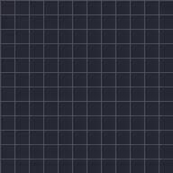

ٹیکسٹ پروگریس

شروع اور اختتام کے درمیان ٹیکسٹ کو حرف، لفظ یا لائن کے حساب سے دکھاتا ہے، اختیاری فیڈ، سلائیڈ، اسکیلنگ یا بلر کے ساتھ۔
ٹیکسٹ پروگریس ٹیکسٹ لیئر کو تھوڑا تھوڑا کر کے دکھاتا ہے۔ اختتام کو 0 % سے 100 % تک اینیمیٹ کریں، پھر ٹیکسٹ اس بنیاد پر ظاہر ہوتا ہے: حرف، لفظ یا لائن، آپ کی منتخب کردہ سمت میں۔ ظاہر ہونے کا انداز طے کرتا ہے کہ ہر حصہ کیسے آئے: پاپ، فیڈ، سلائیڈ، گرو، سکڑنا یا بلر۔ تیار پریسیٹس ٹائپ رائٹر، فیڈ اِن بائے ورڈ، سلائیڈ اَپ بائے لیٹر اور پاپ اِن کے کی فریمز پہلے سے سیٹ ہیں۔
سیٹنگز
| سیٹنگ | قسم | رینج | ڈیفالٹ |
|---|---|---|---|
| شروع | نمبر | 0% سے 100% تک | 0% |
| اختتام | نمبر | 0% سے 100% تک | 100% |
| بنیاد | انتخاب | حرف, لفظ, لائن | حرف |
| سمت | انتخاب | شروع سے, اختتام سے, درمیان سے, رینڈم | شروع سے |
| ظاہر ہونے کا انداز | انتخاب | پاپ, فیڈ, اوپر سلائیڈ, نیچے سلائیڈ, بائیں سلائیڈ, دائیں سلائیڈ, بڑا ہونا, چھوٹا ہونا, بلر | فیڈ |
| نرمی | نمبر | 0 سے 50 تک | 0 |
| فاصلہ | نمبر | 0 سے 1000 تک | 40 |
| سیڈ | نمبر | 0 سے 1000 تک | 1 |
پریسیٹس
ایفیکٹس لائبریری میں ایفیکٹ کے ڈیٹیل صفحے سے ایک منتخب کریں۔ ہر ایک تیار سیٹنگ ہے جسے آپ مزید ایڈٹ کر سکتے ہیں۔
- ٹائپ رائٹر
- لفظ بہ لفظ فیڈ اِن
- حرف بہ حرف اوپر سلائیڈ
- پاپ اِن